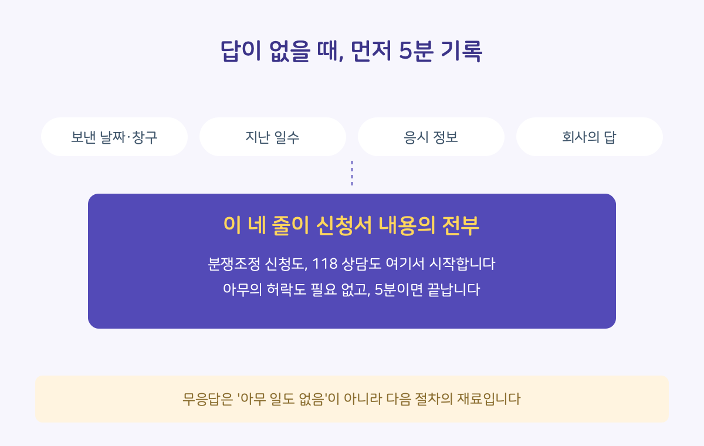
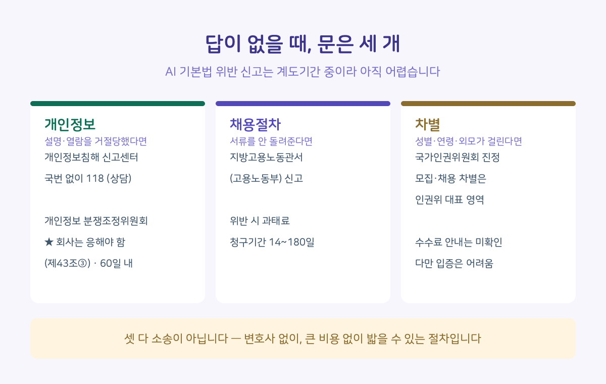

지난 편에서 정리한 대로 설명 요구 메일을 보냈다고 해봅시다. 그런데 답이 없거나, "알려드릴 수 없습니다" 한 줄이 돌아왔습니다. 여기서 끝일까요.
아닙니다. 답이 없을 때만이 아니라, 서류나 차별처럼 문제 종류가 다를 때 가는 곳까지 같이 정리했습니다. 그리고 이번 편에는 지난 편에 없던 게 하나 있습니다. 상대가 무시할 수 없는 절차가 있습니다.
■ 답이 없는 것도 기록입니다
먼저, 답을 못 받은 상태에서 혼자 할 수 있는 일부터. 다음 네 가지를 한 곳에 적어둡니다.
· 언제, 어느 창구로 보냈는지 (보낸 메일함에 그대로 남아 있습니다)
· 며칠이 지났는지
· 지난 편에서 챙겨둔 응시 정보 — 응시 화면의 서비스 이름, 링크 도메인, 안내 메일 발신 주소
· 회사가 보낸 답이 있다면 그 내용
이게 아래 모든 절차의 신청서에 들어갈 내용 전부입니다. 5분이면 끝나고, 아무의 허락도 필요 없습니다. 그리고 무응답은 아무 일도 일어나지 않은 게 아닙니다. 답하지 않았다는 사실 자체가 다음 절차의 재료입니다.

■ 무시할 수 없는 문이 하나 있습니다
개인정보 분쟁조정위원회. 개인정보 포털에서 온라인으로 신청할 수 있고, 재판이 아니라 위원회가 양쪽 말을 듣고 조정안을 내는 방식입니다.
여기서 중요한 대목이 있습니다. 개인정보보호법은 2023년 개정으로, 개인정보처리자가 분쟁조정 통지를 받으면 특별한 사유가 없는 한 조정에 응하도록 정했습니다(제43조 제3항). 내 메일은 답하지 않아도 그만이지만, 이건 그렇지 않습니다. 위원회는 신청을 받은 날부터 60일 이내에 조정안을 작성하게 되어 있습니다.
다만 정확히 말하면, 응해야 하는 것은 절차이지 조정안 수락까지 강제되는 것은 아닙니다. 회사가 조정안을 거부할 수도 있습니다. 단, 거부하려면 거부한다고 말해야 합니다. 조정안을 받고 15일 안에 수락 여부를 알리지 않으면 수락한 것으로 봅니다(제47조). 여기서도 침묵은 선택지가 아닙니다. 그래도 차이는 큽니다. 무시하고 넘어갈 수 있었던 일이, 답변을 만들어야 하는 일이 됩니다. 조정이 성립하면 재판상 화해와 같은 효력이 생깁니다.
더 가벼운 문도 있습니다. 개인정보침해 신고센터, 국번 없이 118. 신고가 아니라 상담부터 됩니다. "이게 신고할 일이긴 한가" 싶을 때 전화 한 통으로 그 자리에서 답을 들을 수 있습니다. 이것도 상대의 답을 기다릴 필요가 없는 쪽입니다.
■ 내 문제는 어느 문인가요
갈 수 있는 곳은 118·개인정보 분쟁조정위원회·지방고용노동관서·국가인권위원회 네 군데인데, 문제 성격으로 나누면 문은 셋입니다.

개인정보 — 설명 요구나 열람 요구를 거절당했거나 답이 없다면 여기입니다. 위의 118과 분쟁조정위원회.
채용 절차 — 제출한 서류를 안 돌려주거나(홈페이지·이메일로 낸 서류는 반환이 아니라 파기 대상입니다), 반환·파기 고지 자체가 없었다면 채용절차법 문제입니다. 관할 지방고용노동관서(고용노동부)에 신고할 수 있고, 위반 유형에 따라 과태료가 부과될 수 있습니다. 서류 반환 청구에는 기간이 있으니(채용 확정 후 기업이 정한 14~180일 범위) 미루지 않는 게 좋습니다.
차별 — AI 평가에서 성별·연령·외모 같은 요소가 결과에 영향을 준 것으로 의심된다면 국가인권위원회에 진정을 낼 수 있습니다. 모집·채용 단계의 차별은 인권위가 다루는 대표적 영역입니다. 진정 접수에 수수료가 든다는 안내는 찾지 못했습니다.
■ 어디까지 되나요
한 번에 정리하겠습니다. 세 가지는 미리 알고 가는 게 좋습니다.
첫째, AI 기본법 위반으로 직접 신고하는 건 지금은 어렵습니다. 계도기간인 데다, 고영향 판단 기준도 아직 고시가 아니라 가이드라인 단계에 머물러 있습니다. 그래서 현재의 실전 경로는 위의 세 갈래(네 곳)입니다.
둘째, 차별은 입증이 어렵습니다. AI 내부에서 무슨 일이 있었는지를 지원자가 밝히기는 현실적으로 힘듭니다. 그래서 이 문은 정황이 구체적일 때 실효가 있습니다.
셋째, 내 탈락이 뒤집히는 경우는 거의 없습니다. 위 경로들은 끝난 전형의 결과를 되돌리기보다 기업의 절차와 관행을 바로잡는 쪽입니다.
그럼에도 이 절차들이 이메일과 다른 지점은 분명합니다. 이메일은 회사가 침묵을 선택할 수 있지만, 분쟁조정은 그럴 수 없습니다. 그리고 이 절차들이 실제로 바꾸는 건 내 탈락 한 건이 아니라 다음 지원자가 겪을 전형입니다.
부담이 걱정되면 지난 편에서 말한 순서가 여기에도 그대로 적용됩니다 — 재지원 생각이 없는 회사부터. 그리고 118 전화 상담은 그 자리에서 안내를 듣고 끝나는 절차라, 회사가 알기 전에 내 경우가 신고할 일인지부터 확인할 수 있습니다.
■ 취준생에게 이게 왜 중요한가요
경로를 알고 있는 사람의 요구는 무게가 다릅니다. 기업 입장에서도 "다음 단계가 있는 요구"는 무시하기 어렵습니다. 그리고 신고는 거창한 결심이 아닙니다. 118 상담 전화 한 통부터 시작해도 됩니다.
네 편을 읽고도 "그래서 나는 뭐부터?"가 남는다면 답은 하나입니다 — 다음 지원 때 캡처 한 장. 시리즈의 모든 절차가 그 한 장에서 시작합니다.
이것으로 4부작을 마칩니다. 채용 AI가 왜 '고영향'인지(1편), "사람이 최종 판단한다"는 말의 실제 의미(2편), 응시 전부터 탈락 후까지 지원자가 할 수 있는 것(3편), 그리고 답이 없을 때 가는 곳(4편)까지. 제도는 계속 바뀌는 중이고, 바뀌는 지점마다 다시 정리해서 올리겠습니다.
출처 및 확인 정보
· 「개인정보 보호법」 제43조(조정의 신청 등) 제3항 — 개인정보처리자의 분쟁조정 의무 응대, 2023.3.14. 개정 / 제44조 60일 이내 조정안 작성(부득이한 사정 시 위원회 의결로 연장 가능) / 제47조 조정안 수락 여부를 15일 내 알리지 않으면 수락 간주, 조정 성립 시 재판상 화해 효력 — 국가법령정보센터·개인정보 포털 확인
· 「개인정보 보호법」 제62조(침해 신고) — 개인정보침해 신고센터(118)
· 「채용절차의 공정화에 관한 법률」 — 채용서류 반환(상시 30명 이상 적용, 청구기간 14~180일), 위반 시 과태료·지방고용노동관서 신고
· 「국가인권위원회법」 — 모집·채용 차별 진정 (진정 수수료 관련 안내는 확인하지 못했습니다)
· 고영향 판단 기준: 「고영향 인공지능 판단 가이드라인」(과기정통부·KOSA, 2026.1.22 시행 맞춰 배포) 배포됨 / 「고영향 인공지능 관련 사업자 책무에 관한 고시」는 2026.3.12 행정예고 단계 / 과기정통부 「고영향 인공지능 해당 여부 확인 요청」 창구(AI기본법 제33조) 가동 중 / 과태료 계도기간 최소 1년(2026.1.22 시행 → 2027.1)
· 확인 일자: 2026.7.24. (분쟁조정 의무 응대·60일 조항은 2026.7.29. / 43·44·47·62조와 고영향 기준 현황은 2026.8.30. 추가 확인) / 검증 상태: 신고·조정 경로는 공공기관 안내 페이지 대조, 조문은 국가법령정보센터 원문 대조
· 수정 이력: 2026.9.3. 제목의 「네 군데」와 본문의 「문 셋」이 이어지도록 문장 3곳 보강(도입부·「어느 문인가요」 첫 줄·「어디까지 되나요」 첫째 항). 사실 변경 없음
고지: 본 게시글은 정보 제공 목적이며 법률 자문이 아닙니다. 개별 사안은 전문가 상담이 필요합니다.